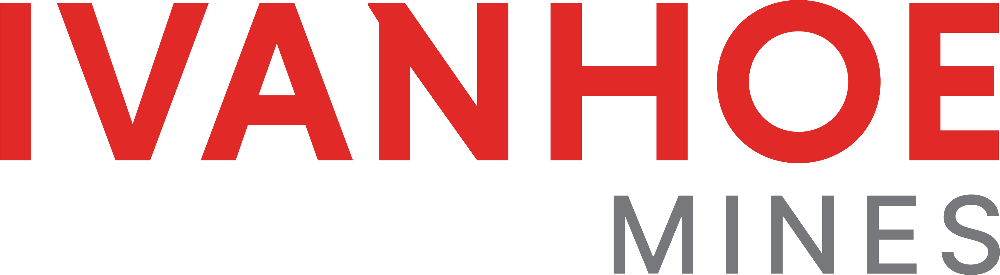
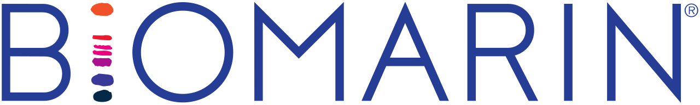
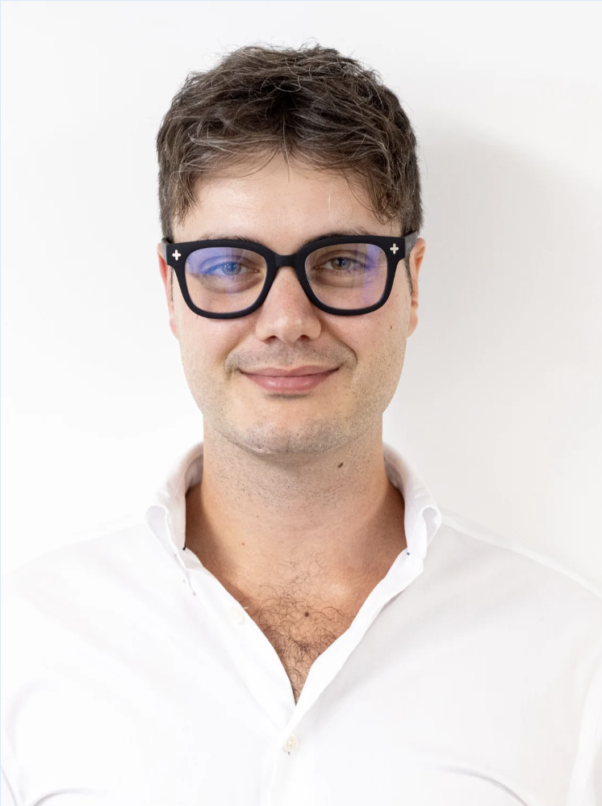

At Tyrrhenian Investments, our long-only strategy is designed to identify and capitalise on opportunities in small to medium-cap companies across a wide range of sectors. We do not limit ourselves to a specific industry; instead, we believe diversification across multiple markets enables us to capture value wherever it emerges. In this vein, price is always a crucial component of our potential.
Independent · Long-Only · London
We are
Tyrrhenian.
A project driven by passion, fuelled by curiosity,
and committed to aiming high.
Portfolio & Performance
Measured by discipline,
expressed in numbers.
We treat every position as a hypothesis and every result as evidence. Our portfolio is built to compound steadily — not to chase headlines.
Annualised Return
0%
Track record reflects performance to date under current strategies.
Cumulative Growth
Indexed to 100 at inception
Tyrrhenian
Figures and chart shown reflect illustrative trend data. Past performance is not indicative of future results.
Strategy
Our investment philosophy.
Our investment approach combines fundamental analysis with rigorous market research to create a comprehensive view of potential opportunities. By merging these two disciplines, we aim to achieve efficient decision-making for short to medium-term investments, balancing intrinsic company value with market behaviour dynamics.
Our capital allocation is driven entirely by our independent research, proprietary analysis, and valuation models. We take a data-informed, conviction-based approach to each position we build. As a high-risk, high-return fund, Tyrrhenian Investments embraces volatility as a necessary element of outperformance. By focusing on consistent portfolio management and thorough due diligence, we seek to use it to our advantage.
Portfolio & Positions
Active Portfolio
Current equities and core positions managed under our long-only strategy.
Bank of Georgia
LSE · BGEO
MS International
LSE · MSI
Victoria Plumbing
LSE · VIC
Closed
Ivanhoe Mines
TSE · IVN
ClosedNuvation Bio
NYSE · NUVB
Closed
BioMarin Pharmaceutical
NASDAQ · BMRN
ClosedClosed positions reflect historical activity. Past performance is not indicative of future results.
Team
The people behind the process.
Francesco Teo Franchi
Co-Founder
Francesco has worked at Assicurazioni Generali, KeyValue and Polar Capital, with a focus on Corporate Finance and Research, in addition to coaching young aspiring footballers. Beyond finance, he's a sports enthusiast, a devoted Juventus supporter, and a mountain-sports lover.
Favourite Drink: Negroni
Leon Zappone
Co-Founder
Leon has worked at Vantage Capital Markets in Hong Kong, Recordati S.p.A. and Harley of London, holding positions in Cash & Equities Trading and Corporate Finance. Furthermore, he has extensive experience in organising events. Leon is also a passionate sailor and windsurfer.
Favourite Drink: Vodka Soda

Alexander Gordon Will
Co-Founder
Alex has experience in the insurance sector as well as the health tech sector through Care Safety Innovations, a start-up dedicated to digital solutions for care providers. Beyond that, Alex is a qualified English Language teacher with experience in different countries. His hobbies include languages and cooking.
Favourite Drink: Martini
About
Our story.
Who we are
Tyrrhenian Investments is a project started by three university students eager to put their knowledge into action. Through their own capital, the founders have been pursuing innovative investment strategies designed for the dynamic and fast-paced world of today.
Why "Tyrrhenian"?
The name Tyrrhenian pays homage to our home country, Italy, as well as the spirit of the sea. The sea is vast, difficult to predict and constantly changing. At the same time, it affects every aspect of our lives and is in fact a constant, even if many don't realise it. We view financial markets in the same way. And in the same way we have learnt to navigate the sea, we are navigating through the markets, eager to pursue new opportunities and horizons.